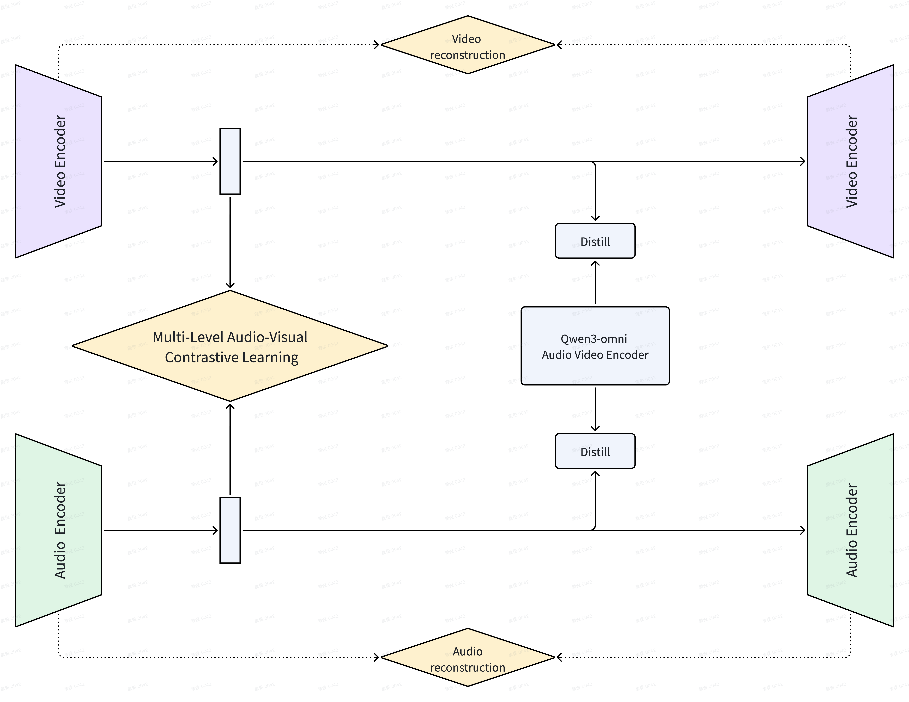

inference VAE parameters across video and audio branches.
A@1 sync probing gain over reconstruction-only latents.
LSE-C lip-sync score for the full T2AV model on Verse-Bench Set3.
extra inference overhead from the alignment and distillation heads.
Method
Aligned latents without changing the VAE interface.
OmniVAE keeps mature modality-specific VAE architectures: a 3D causal video VAE and a continuous waveform audio VAE. During training, paired audio-video clips provide two additional signals: a segment-level bidirectional InfoNCE loss for temporal correspondence, and semantic distillation from frozen Qwen3-Omni encoders for modality-level learnability.
The contrastive head and distillation projectors are training-only. At inference time the audio and video VAEs are standard independent tokenizers, so they can be used jointly for T2AV generation or separately for reconstruction workflows.
Audio-Visual Contrastive Learning
Video latents are spatially aggregated into frame tokens, pooled into temporal segments, and contrasted with matched audio segments using hard intra-clip and sibling-clip negatives.
Uni-Modality Semantic Distillation
Lightweight projectors align each VAE latent stream to frozen semantic teacher features, improving downstream generation while preserving reconstruction quality.
Bridged T2AV Generation
Downstream DiT models combine T2V and T2A priors with zero-initialized bidirectional bridge modules for joint video and audio flow matching.
Architecture
Two independent VAEs, one aligned latent space.

Examples
Text-to-audio-video samples from the released T2AV model.
Public Speaking
A medium close-up of a speaker on a stage, delivering a measured line before a quiet auditorium.
Small Stage Talk
A close-up speaker clip with animated mouth movement and a clean spoken soundtrack.
Lecture Close-Up
A formal lecture-style prompt rendered as synchronized speech and face motion.
Results
Alignment improves both probing and downstream generation.
Audio-Video Sync Probing
| Method | A@1 | A@5 | tol1 |
|---|---|---|---|
| Recon | 6.4 | 31.5 | 16.2 |
| Recon + Distill | 7.1 | 33.0 | 17.5 |
| Recon + AVCLIP | 18.1 | 47.8 | 34.5 |
| OmniVAE | 20.2 | 50.1 | 37.2 |
Verse-Bench T2AV
| Method | FVD | CLAP | LSE-C |
|---|---|---|---|
| Recon | 412.6 | 0.241 | 2.18 |
| Recon + Distill | 387.3 | 0.286 | 2.34 |
| Recon + AVCLIP | 394.5 | 0.273 | 2.71 |
| OmniVAE | 376.8 | 0.314 | 2.89 |
Resources
Code, checkpoints, and release validation scripts.
The GitHub repository contains VAE, T2AV generation, and sync probing code. The Hugging Face bundle contains release VAE checkpoints, T2AV DiT checkpoints, the text encoder dependency, Verse-Bench manifests, and metric weights.
Citation
Temporary citation entry.
@article{omnivae2026,
title = {OmniVAE: A Cross-Modal Aligned VAE for Joint Audio-Video Generation},
author = {Zhan, Jun and Contributors},
journal = {arXiv preprint arXiv:XXXX.XXXXX},
year = {2026},
url = {https://github.com/JunZhan2000/OmniVAE}
}